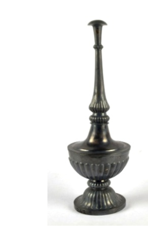

🔇 Is bhasha me is vastu ka audio abhi uplabdh nahi hai.
7. छिड़कनी (Sprinkler)

अभिलेख संख्या: XLIV-242
चाँदी की गुलाब जल की छिड़कनी एक वियोज्य गोल नुकीले आधार के साथ बनी है, जिसके ऊपर नालीनुमा उभारों की एक अंगूठी है। इसके निचले भाग में भी ऐसे ही नालीनुमा उभार बने हुए हैं। पेंचदार नलिका का निचला भाग नुकीला है और उस पर भी नालीनुमा उभार हैं, जिसके शीर्ष पर फव्वारे जैसी नॉब लगी हुई है। गुलाब जलदानी या रोज़वॉटर स्प्रिंकलर की उत्पत्ति फारस (पर्शिया) में हुई थी और इनका उपयोग भारतीय उपमहाद्वीप में मुगल काल (1526 से 1857 ई.) के दौरान किया जाता था। यह सामाजिक रीति-रिवाजों और धार्मिक अनुष्ठानों के अवसर पर गुलाब जल छिड़कने के लिए प्रयोग में लाई जाती थी। इस तरह की छिड़कनी बनाने में सोना, चाँदी, काँच जैसे विभिन्न पदार्थों का उपयोग किया जाता था, और इन्हें उपयोगकर्ता की प्रतिष्ठा के अनुसार सजाया जाता था। यह चाँदी की छिड़कनी भारत से है और इसका निर्माण उन्नीसवीं सदी के उत्तरार्ध में किया गया था।
7. Sprinkler
Acc No: XLIV-242
A silver rose-water sprinkler made with a detachable round pointed base, above which sits a ring of fluted bosses. Similar fluted bosses appear on its lower portion. The lower part of the screwed neck is pointed and also carries fluted bosses, topped by a fountain-like knob. The rose-water sprinkler originated in Persia and was used in the Indian subcontinent during the Mughal period (1526 to 1857 AD). It was used to sprinkle rose water on the occasion of social customs and religious ceremonies. Various materials such as gold, silver and glass were used in making such sprinklers, and they were ornamented according to the standing of the user. This silver sprinkler is from India and was made in the later part of the nineteenth century.
7. స్ప్రింక్లర్
Acc No: XLIV-242
ఇది వెండితో చేసిన పన్నీరు చిలకరించే పాత్ర లేదా 19వ శతాబ్దం చివరి భాగం నాటి భారతదేశం నుండి వచ్చింది. దీనికి విడదీయగలిగే గుండ్రటి, సన్నబడిన పీఠం ఉంది, దాని పైన ఫ్లూటింగ్స్ (చారలు) ఉన్న ఒక రింగ్ ఉంది. పాత్ర యొక్క కింది భాగంలో కూడా ఫ్లూటింగ్స్ ఉన్నాయి. పైభాగంలో తిప్పడానికి వీలున్న సన్నబడిన పైపుకు కింది భాగంలో ఫ్లూటింగ్స్ ఉండి, ఫౌంటెన్ లాంటి గుండీ అమర్చబడి ఉంది. ఈ పన్నీరు చిలకరించే పాత్రలు మొదట పర్షియాలో ఉద్భవించాయి మరియు మొఘల్ కాలం (1526 నుండి 1857) నుండి భారత ఉపఖండంలో ఉపయోగంలో ఉన్నాయి. వీటిని సామాజిక ఆచారాలు మరియు మతపరమైన వేడుకలలో పన్నీరు చిలకరించడానికి ఉపయోగించేవారు. ఆ పాత్రను ఉపయోగించే వారి హోదాను బట్టి, బంగారం, వెండి, గాజు వంటి विभिन्न రకాల పదార్థాలను ఉపయోగించి వీటిని తయారు చేసి అలంకరించేవారు.
۷. اسپرنکلر
Acc No: XLIV-242
یہ چاندی کا گلاب پاش علیحدہ ہونے والا گول اور مخروطی بنیاد کا حامل ہے۔ جس کے اوپر ایک حلقہ نصب ہے اور اس پر عمودی دھاریاں تراشی گئی ہیں۔ باڈی کے نچلے حصے پر بھی عمودی دھاریاں بنی ہوئی ہیں۔ اس کا پیچ دار، مخروطی نلکی نما دہانہ بھی نچلے حصے میں دھاریوں سے مزین ہے اور اس کے سرے پر فوارہ نما گنبد کی طرح بٹن نصب ہے۔ گلاب پاش یا گلاب جلدانی کی ابتدا فارس میں ہوئی، اوربر صغیر میں اس کا استعمال عہدِ مغل پندرہ سو چھبیس سے اٹھارہ سو ستاون کے دوران رائج رہا۔ اسے معاشرتی رسومات اور مذہبی تقاریب کے دوران گلاب کا عرق چھڑکنے کے لیے استعمال کیا جاتا تھا۔اس گلاب پاش کی تیاری میں سونے چاندی اور شیشہ جیسے مختلف مواد استعمال کیے جاتے تھے، اور انہیں استعمال کرنے والے کے مرتبے اور سماجی حیثیت کے مطابق آراستہ و مزین کیا جاتا تھا۔ یہ چاندی کا گلاب پاش ہندوستان سے تعلق رکھتا ہے اور انیسویں صدی کے اواخر کا ہے۔
৭. গোলাপজল ছেটানোর যন্ত্র
Acc No: XLIV-242
রুপোর তৈরি এই গোলাপজল ছিটানোর যন্ত্রটির নিচের অংশটি বৃত্তাকার ও ক্রমশ সরু হয়ে আসা একটি ভিত্তি দিয়ে তৈরি, যা আলাদা করা সম্ভব। এর ওপরে খাঁজকাটা নকশা সংবলিত একটি আংটা বা রিং রয়েছে। মূল কাঠামোর নিচের অংশেও অনুরূপ খাঁজকাটা নকশা বিদ্যমান। এর ওপরের স্ক্রু জাতীয় অংশটি আসলে একটি সরু পাইপ, যার নিচের দিকে খাঁজকাটা নকশা এবং মাথায় ফোয়ারার মতো একটি নব রয়েছে। এই ধরনের গোলাপজল ছেটানোর যন্ত্র বা 'গোলাপজলদানির' উৎপত্তি পারস্যে এবং ভারতীয় উপমহাদেশে ১৫২৬ থেকে ১৮৫৭ সাল পর্যন্ত মুঘল আমল থেকে এটি ব্যবহৃত হয়ে আসছে। এটি সামাজিক রীতিনীতি এবং ধর্মীয় আচার-অনুষ্ঠানের সময় গোলাপজল ছিটানোর কাজে ব্যবহৃত হতো। এই গোলাপজলদানি তৈরির জন্য সোনা, রুপো, কাঁচের মতো বিভিন্ন উপাদান ব্যবহৃত হতো, যা ব্যবহারকারীর পদমর্যাদা অনুযায়ী অলঙ্কৃত নকশা দিয়ে সাজানো হতো। এই রূপোর গোলাপজলদানিটি ভারত থেকে প্রাপ্ত এবং এটি ১৯ শতকের শেষের দিকে নির্মিত।
7. છંટકાલ માટે ઇપકરણ
Acc No: XLIV-242
ચાંદીનું ગુલાબજળ છાંટવાનું પાત્ર (રોઝ વોટર સ્પ્રિંકલર) અલગ કરી શકાય તેવું ગોળાકાર ટેપર આધાર ધરાવે છે, જેના ઉપર વળય (રિંગ) છે જેમાં ઊભી લાઈનો જેવી નકશી (ફ્લ્યુટિંગ્સ) કરવામાં આવી છે. પાત્રના નીચેના ભાગમાં પણ આવી જ ફ્લ્યુટિંગ્સ જોવા મળે છે. સ્ક્રૂ પ્રકારની ટેપર નળીના નીચેના ભાગમાં પણ ફ્લ્યુટિંગ્સ છે અને તેના ઉપર ફુવારા જેવી આકારવાળો હાથિયો (નોબ) છે. ગુલાબજળ છાંટવાનું આ પાત્ર અથવા ‘ગુલાબજલદાની’ મૂળરૂપે પારસ (પર્શિયા)માં ઉદ્ભવેલું હતું અને 1526 થી 1857 દરમિયાન મુગલકાળમાં ભારતીય ઉપખંડમાં તેનો ઉપયોગ થતો હતો. તેનો ઉપયોગ સામાજિક પરંપરાઓ અને ધાર્મિક વિધિઓ દરમિયાન ગુલાબજળ છાંટવા માટે થતો હતો. આવા ગુલાબજળ છાંટવાના પાત્રો સોનું, ચાંદી, કાચ જેવી વિવિધ સામગ્રીમાંથી બનાવવામાં આવતા અને વપરાશકર્તાની પ્રતિષ્ઠા મુજબ તેને શોભિત કરવામાં આવતા. આ ચાંદીનું સ્પ્રિંકલર ભારતનું છે અને તેનો સમય 19મી સદીના અંતકાળનો માનવામાં આવે છે.
7. ಸ್ಪ್ರಿಂಕ್ಲರ್
Acc No: XLIV-242
ಬೆಳ್ಳಿಯ ಸಿಂಪಡಿಸುವಿಕೆಯ ಸಾಧನವು ಬೇರ್ಪಡಿಸಬಹುದಾದ ವೃತ್ತಾಕಾರದ ಶಂಕುವಿನಾಕಾರದ ಪೀಠವನ್ನು ಹೊಂದಿದೆ ಮತ್ತು ಅದರ ಮೇಲೆ ಕೊಳವೆಯಾಕಾರದ ಕೆತ್ತನೆಗಳಿರುವ ಒಂದು ಬಳೆಯಂತಹ ಉಂಗುರವಿದೆ. ಇದರ ಮುಖ್ಯ ಭಾಗದ ಕೆಳಭಾಗದಲ್ಲಿಯೂ ಸಹ ಪಟ್ಟೆಗಳ ವಿನ್ಯಾಸವನ್ನು ಕಾಣಬಹುದು. ತಿರುಪು മാദരಿಯಲ್ಲಿರುವ ಇದರ ಕೊಳವೆಯು ಮೇಲಕ್ಕೆ ಹೋಗುತ್ತಾ ಸಣ್ಣದಾಗುತ್ತದೆ, ಮತ್ತು ಇದರ ಕೆಳಭಾಗದಲ್ಲಿಯೂ ಪಟ್ಟೆಗಳ ವಿನ್ಯಾಸವಿದ್ದು, ತುದಿಯಲ್ಲಿ ಕಾರಂಜಿಯಂತಹ ಸುಂದರವಾದ ಹಿಡಿಕೆಯನ್ನು ಹೊಂದಿದೆ. ಸಿಂಪಡಿಸುವಿಕೆ ಅಥವಾ 'ಗುಲಾಬ್-ಜಲದಾನಿ' ಪರ್ಷಿಯಾ ದೇಶದಲ್ಲಿ ಉಗಮವಾಯಿತು ಮತ್ತು ಇದನ್ನು ಭಾರತೀಯ ಉಪಖಂಡದಲ್ಲಿ 1526 ರಿಂದ 1857 ರವರೆಗಿನ ಮೊಘಲರ ಆಳ್ವಿಕೆಯ ಕಾಲದಿಂದಲೂ ಬಳಸಲಾಗುತ್ತಿದೆ. ಸಾಮಾಜಿಕ ಪದ್ಧತಿಗಳು ಮತ್ತು ಧಾರ್ಮಿಕ ಸಮಾರಂಭಗಳಲ್ಲಿ ಗುಲಾಬಿ ನೀರನ್ನು ಸಿಂಪಡಿಸಲು ಇದನ್ನು ಬಳಸಲಾಗುತ್ತಿತ್ತು.
ಈ ಸಿಂಪಡಿಸುವಿಕೆಗಳನ್ನು ತಯಾರಿಸಲು ಚಿನ್ನ, ಬೆಳ್ಳಿ ಮತ್ತು ಗಾಜಿನಂತಹ ವಿವಿಧ ವಸ್ತುಗಳನ್ನು ಬಳಸಲಾಗುತ್ತಿತ್ತು, ಮತ್ತು ಬಳಸುವವರ ಅಂತಸ್ತಿಗೆ ತಕ್ಕಂತೆ ಇವುಗಳನ್ನು ಅಲಂಕರಿಸಲಾಗುತ್ತಿತ್ತು. ಭಾರತದಲ್ಲಿಯೇ ರೂಪುಗೊಂಡಿರುವ ಬೆಳ್ಳಿಯ ಈ ಅದ್ಭುತ ಕಲಾಕೃತಿಯು 19ನೇ ಶತಮಾನದ ಅಂತ್ಯದ ಕಾಲಕ್ಕೆ ಸೇರಿದೆ.
ಈ ಸಿಂಪಡಿಸುವಿಕೆಗಳನ್ನು ತಯಾರಿಸಲು ಚಿನ್ನ, ಬೆಳ್ಳಿ ಮತ್ತು ಗಾಜಿನಂತಹ ವಿವಿಧ ವಸ್ತುಗಳನ್ನು ಬಳಸಲಾಗುತ್ತಿತ್ತು, ಮತ್ತು ಬಳಸುವವರ ಅಂತಸ್ತಿಗೆ ತಕ್ಕಂತೆ ಇವುಗಳನ್ನು ಅಲಂಕರಿಸಲಾಗುತ್ತಿತ್ತು. ಭಾರತದಲ್ಲಿಯೇ ರೂಪುಗೊಂಡಿರುವ ಬೆಳ್ಳಿಯ ಈ ಅದ್ಭುತ ಕಲಾಕೃತಿಯು 19ನೇ ಶತಮಾನದ ಅಂತ್ಯದ ಕಾಲಕ್ಕೆ ಸೇರಿದೆ.
୭. ସ୍ପ୍ରିଙ୍କଲର୍
Acc No: XLIV-242
ଏହା ଗୋଟିଏ ରୂପାର ଗୋଲାପ ଜଳ ସିଞ୍ଚନ ପାତ୍ର, ଯାହାର ତଳ ଭାଗଟି ଗୋଲାକାର ଶଙ୍କୁ ଆକାରର ଦେଖାଯାଏ, ଯାହାକୁ ଖୋଲା ଯାଇ ପାରେ, ଏବଂ ଏହା ଉପରେ ସୂକ୍ଷ୍ମ ମଣ୍ଡଳାକାର ରିଂ ରହିଛି। ଏହାର ଶରୀରର ତଳ ଅଂଶରେ ମଧ୍ୟ ବହୁ ସୂକ୍ଷ୍ମ କଳାକୃତି ଦେଖାଯାଇଥାଏ। ଏହି ପାତ୍ରର ଉପର ଭାଗଟି ସ୍କ୍ରୁ ଭଳି ଓ ତଳ ଅଂଶଟି ସୂକ୍ଷ୍ମ ଶଙ୍କୁ ଆକାରର ହୋଇଛି, ଯାହାର ଶୀର୍ଷଟି ଗୋଟିଏ ଫାଉଣ୍ଟେନ୍ ଆକୃତିର ନବ୍ ଭଳି ଦେଖାଯାଏ। ଗୋଲାପ ଜଳ ସିଞ୍ଚନ ପାତ୍ର କିମ୍ବା ଗୁଲାବ ଜଳଦାନି ପ୍ରଥମେ ପର୍ସିଆରେ ନିର୍ମିତ ହୋଇଥିଲା ଏବଂ ମୋଗଲ୍ ଶାସନ (1526 ରୁ 1857) ସମୟରେ ଭାରତୀୟ ଉପମହାଦେଶରେ ବ୍ୟବହୃତ ହେବାକୁ ଲାଗିଲା। ସାମାଜିକ ପ୍ରଥା ଓ ଧାର୍ମିକ ଆଚାର-ବିଚାର ସମୟରେ ଗୋଲାପ ଜଳ ସିଞ୍ଚନ କରିବା ପାଇଁ ଏହାକୁ ବ୍ୟବହୃତ କରାଯାଉଥିଲା। ଏହିପରି ଗୋଲାପ ଜଳ ସିଞ୍ଚନ ପାତ୍ର ତିଆରି କରିବା ପାଇଁ ସୁନା, ରୂପା ଓ କାଚ ଭଳି ବିଭିନ୍ନ ଧାତୁକୁ ବ୍ୟବହୃତ କରାଯାଇଥାଏ| ଯାହାକୁ ବ୍ୟବହାରକାରୀଙ୍କର ସମାଜରେ ଥିବା ଆର୍ଥିକ ସ୍ଥିତି ଅନୁଯାୟୀ ତିଆରି କରାଯାଉଥିଲା। ଏହି ରୂପାର ଗୋଲାପ ଜଳ ପାତ୍ରଟି ଭାରତରେ ଊନବିଂଶ ଶତାବ୍ଦୀର ଶେଷ ଭାଗରେ ନିର୍ମିତ ହୋଇଥିଲା।
7. छिड़कनी (Sprinkler)
अभिलेख संख्या: XLIV-242
चाँदी की गुलाब जल की छिड़कनी एक वियोज्य गोल नुकीले आधार के साथ बनी है, जिसके ऊपर नालीनुमा उभारों की एक अंगूठी है। इसके निचले भाग में भी ऐसे ही नालीनुमा उभार बने हुए हैं। पेंचदार नलिका का निचला भाग नुकीला है और उस पर भी नालीनुमा उभार हैं, जिसके शीर्ष पर फव्वारे जैसी नॉब लगी हुई है। गुलाब जलदानी या रोज़वॉटर स्प्रिंकलर की उत्पत्ति फारस (पर्शिया) में हुई थी और इनका उपयोग भारतीय उपमहाद्वीप में मुगल काल (1526 से 1857 ई.) के दौरान किया जाता था। यह सामाजिक रीति-रिवाजों और धार्मिक अनुष्ठानों के अवसर पर गुलाब जल छिड़कने के लिए प्रयोग में लाई जाती थी। इस तरह की छिड़कनी बनाने में सोना, चाँदी, काँच जैसे विभिन्न पदार्थों का उपयोग किया जाता था, और इन्हें उपयोगकर्ता की प्रतिष्ठा के अनुसार सजाया जाता था। यह चाँदी की छिड़कनी भारत से है और इसका निर्माण उन्नीसवीं सदी के उत्तरार्ध में किया गया था।
7. സ്പ്രിങ്ക്ളർ
Acc No: XLIV-242
വേർപെടുത്താവുന്നതും താഴേക്ക് പോകുന്തോറും വായവട്ടം കുറഞ്ഞുവരുന്നതുമായ വൃത്താകൃതിയിലുള്ള പീഠത്തിന്മേൽ നിർമ്മിച്ച അതീവ മനോഹരമായ ഒരു വെള്ളി പനിനീർ തളികയാണിത്. ഇതിൻ്റെ ഉടൽഭാഗത്തും കഴുത്തിന് ചുറ്റുമുള്ള വളയത്തിലും ലംബമായ വരകളോടു കൂടിയ കൊത്തുപണികൾ കാണാം. സ്ക്രൂ പൈപ്പ് മാതൃകയിലുള്ള ഇതിൻ്റെ മുകൾഭാഗം താഴെ വായവട്ടം കുറഞ്ഞും, അഗ്രഭാഗത്ത് ഒരു നീരുറവയെ അനുസ്മരിപ്പിക്കുന്ന കുമിളയോടും കൂടിയാണ് രൂപകൽപ്പന ചെയ്തിരിക്കുന്നത്.
പേർഷ്യയിൽ ഉത്ഭവം കൊണ്ട 'ഗുലാബ്-ജൽദാനി'കൾ മുഗൾ ഭരണകാലം (1526-1857) മുതലാണ് ഭാരതീയ സംസ്കാരത്തിന്റെ ഭാഗമാകുന്നത്. വിശിഷ്ടമായ സാമൂഹിക ചടങ്ങുകളിലും മതപരമായ അനുഷ്ഠാനങ്ങളിലും പനിനീർ തളിച്ച് അതിഥികളെ സ്വീകരിക്കുന്നതിനും അന്തരീക്ഷം ധന്യമാക്കുന്നതിനുമാണ് ഇവ ഉപയോഗിച്ചിരുന്നത്. ഉപയോക്താവിൻ്റെ അന്തസ്സിനും പദവിക്കുമനുസരിച്ച് സ്വർണ്ണം, വെള്ളി, ഗ്ലാസ് എന്നിങ്ങനെ വിവിധ വസ്തുക്കളിൽ ഇവ നിർമ്മിച്ചിരുന്നു. ഭാരതത്തിൽ നിന്നുള്ള ഈ വെള്ളി പനിനീർ തളിക പത്തൊൻപതാം നൂറ്റാണ്ടിൻ്റെ അവസാന കാലഘട്ടത്തിലേതാണ്.
പേർഷ്യയിൽ ഉത്ഭവം കൊണ്ട 'ഗുലാബ്-ജൽദാനി'കൾ മുഗൾ ഭരണകാലം (1526-1857) മുതലാണ് ഭാരതീയ സംസ്കാരത്തിന്റെ ഭാഗമാകുന്നത്. വിശിഷ്ടമായ സാമൂഹിക ചടങ്ങുകളിലും മതപരമായ അനുഷ്ഠാനങ്ങളിലും പനിനീർ തളിച്ച് അതിഥികളെ സ്വീകരിക്കുന്നതിനും അന്തരീക്ഷം ധന്യമാക്കുന്നതിനുമാണ് ഇവ ഉപയോഗിച്ചിരുന്നത്. ഉപയോക്താവിൻ്റെ അന്തസ്സിനും പദവിക്കുമനുസരിച്ച് സ്വർണ്ണം, വെള്ളി, ഗ്ലാസ് എന്നിങ്ങനെ വിവിധ വസ്തുക്കളിൽ ഇവ നിർമ്മിച്ചിരുന്നു. ഭാരതത്തിൽ നിന്നുള്ള ഈ വെള്ളി പനിനീർ തളിക പത്തൊൻപതാം നൂറ്റാണ്ടിൻ്റെ അവസാന കാലഘട്ടത്തിലേതാണ്.